A general, non-symmetric triangle wave appears in Figure 10.7. Here we have arranged the cycle so that, first, the DC component is zero (so that the two corners have equal and opposite heights), and second, so that the midpoint of the shorter segment goes through the point 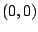.
The two line segments have slopes equal to 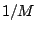 and 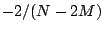, so the
decomposition into component parabolic waves is given by:
The most general way of dealing with linear combinations of elementary
(parabolic and/or sawtooth) waves is to go back to the complex Fourier
series, as
we did in finding the series for the elementary waves themselves. But in this
particular case we can use a trigonometric identity to avoid the extra work of
converting back and forth. First we plug in the real-valued Fourier series:
Figure 10.8 shows the partial strengths with set to
0.03; here, our prediction is that the  dependence should extend to
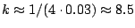, in rough agreement with the figure.
dependence should extend to
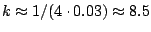, in rough agreement with the figure.
Another way to see why the partials should behave as  for low values of
for low values of
 and
and  thereafter, is to compare the period of a given partial with
the length of the short segment, 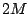. For partials numbering less than
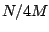, the period is at least twice the length of the short segment, and at
that scale the waveform is nearly indistinguishable from a sawtooth wave.
For partials numbering in excess of 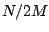, the two corners of the triangle
wave are at least one period apart, and at these higher frequencies the two
corners (each with
thereafter, is to compare the period of a given partial with
the length of the short segment, 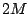. For partials numbering less than
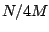, the period is at least twice the length of the short segment, and at
that scale the waveform is nearly indistinguishable from a sawtooth wave.
For partials numbering in excess of 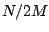, the two corners of the triangle
wave are at least one period apart, and at these higher frequencies the two
corners (each with  frequency dependence) are resolved from each
other. In the figure, the notch at partial 17 occurs at the wavelength
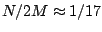, at which wavelength the two corners are one cycle apart;
since the corners are opposite in sign they cancel each other.
frequency dependence) are resolved from each
other. In the figure, the notch at partial 17 occurs at the wavelength
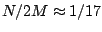, at which wavelength the two corners are one cycle apart;
since the corners are opposite in sign they cancel each other.